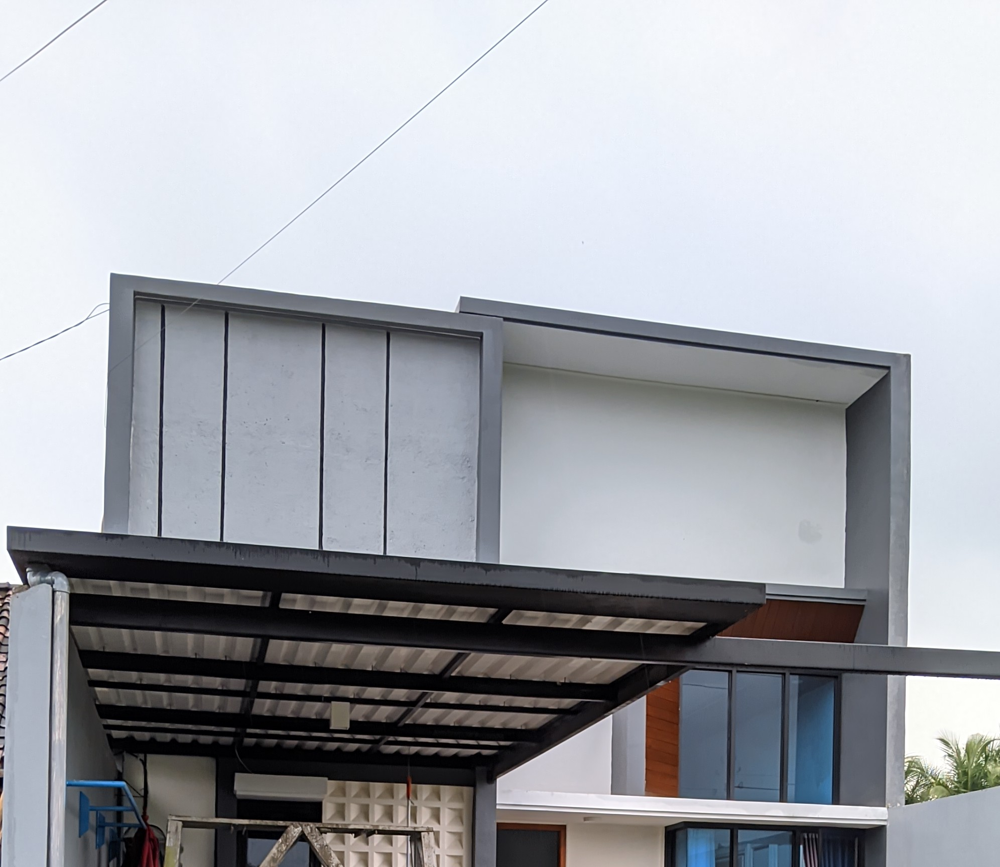
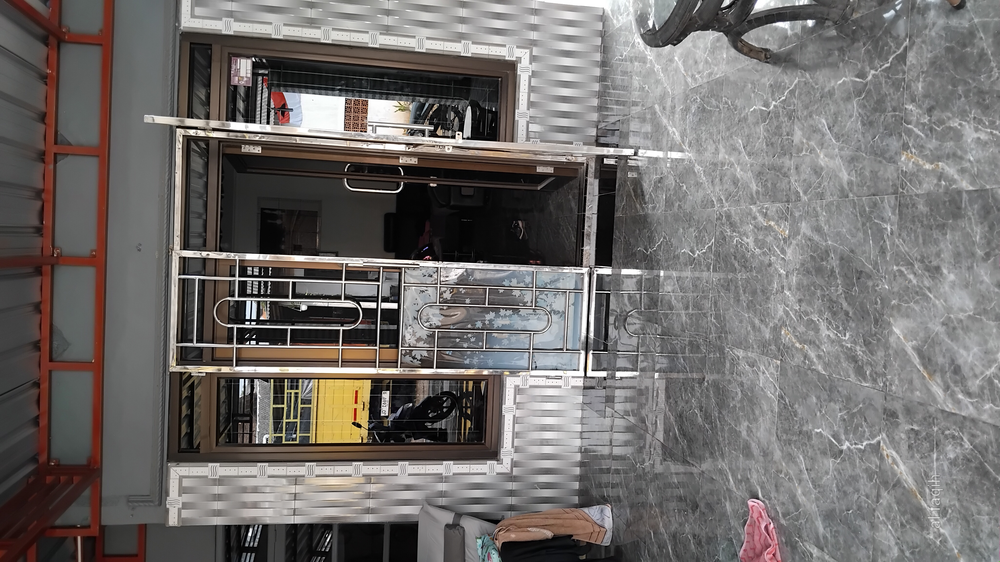
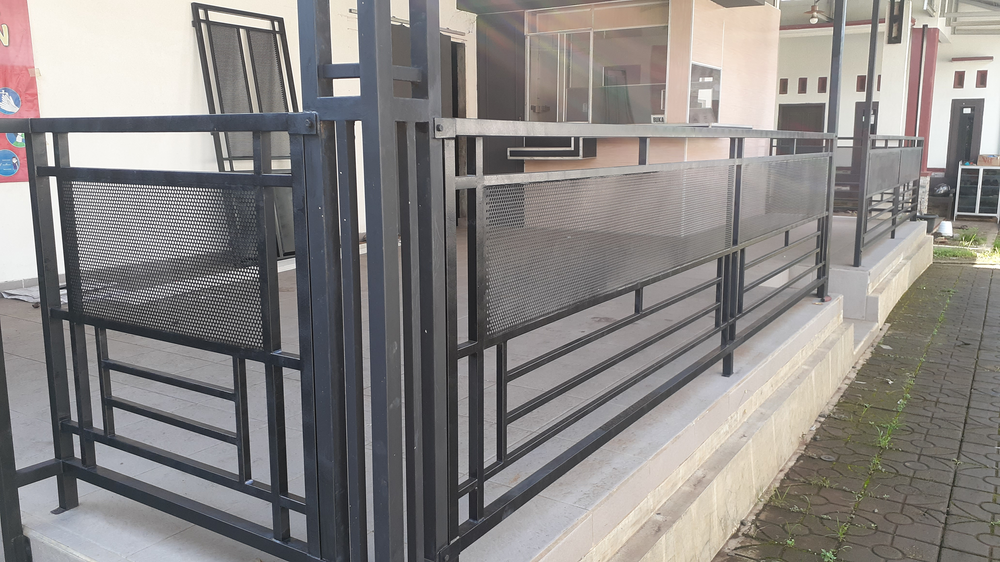
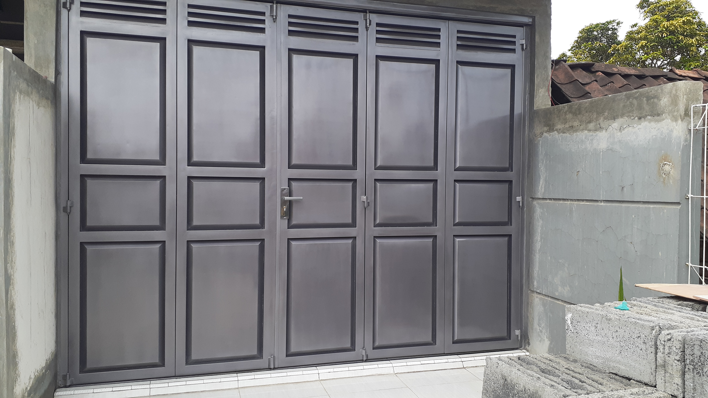
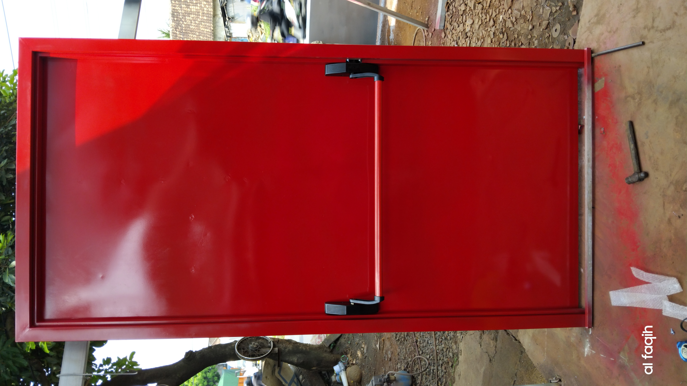
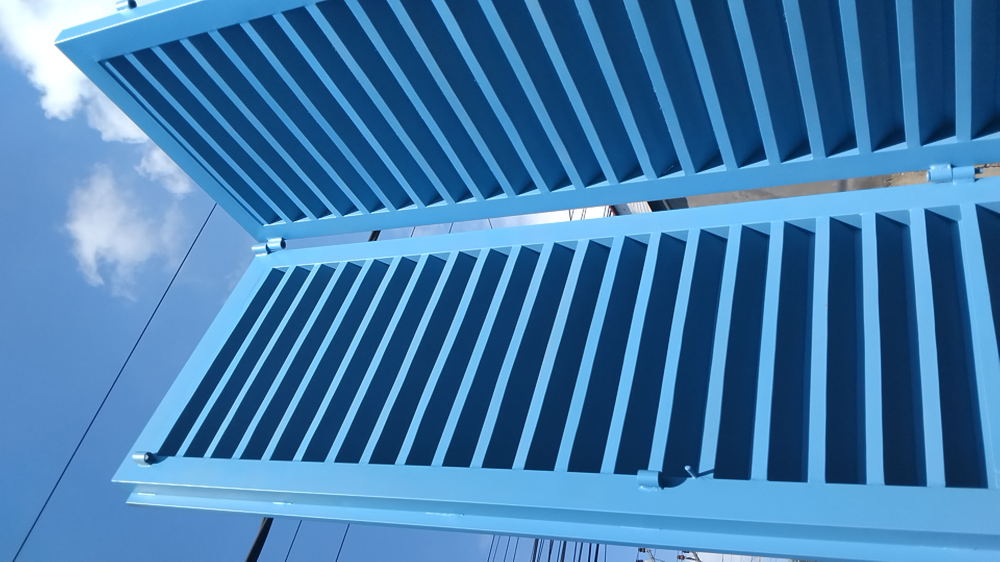

Solusi pengelasan dan pengerjaan logam berkualitas tinggi yang dirancang untuk integritas struktural dan estetika maksimal. Jelajahi layanan utama kami di bawah ini.

STRUKTURALPenjelasan: Layanan pembuatan dan pemasangan atap kanopi yang dirancang khusus untuk area luar ruangan rumah atau bangunan Anda.
Fungsi: Melindungi area bawahnya dari terik matahari dan hujan, sekaligus menambah nilai estetika fasad bangunan.
Contoh Penggunaan: Kanopi garasi mobil (carport), atap teras belakang, dan area parkir kantor.
Keunggulan: Rangka pengelasan kokoh, sudut presisi, dan pemasangan dilakukan oleh tenaga ahli.
Estimasi Harga
Mulai dari Rp 250.000 / m²

KEAMANANPenjelasan: Pembuatan teralis pengaman untuk jendela atau pintu dengan berbagai motif elegan. design dapat ditentukan sendiri atau menggunakan design dari kami
Fungsi: Memberikan lapisan keamanan ekstra untuk mencegah akses tidak diinginkan tanpa menghalangi sirkulasi udara.
Contoh Penggunaan: Teralis jendela rumah dan penutup ventilasi udara.
Keunggulan: Jarak besi aman, sambungan las penuh (sulit dibobol), dan hasil cat halus.
Estimasi Harga
Mulai dari Rp 250.000 / m²

POPULERPenjelasan: Pemasangan pagar pembatas untuk area depan maupun sekeliling bangunan. dengan berbagai pilihan motif dan design.
Fungsi: Menjaga privasi, membatasi hak milik, dan melindungi rumah dari ancaman luar.
Contoh Penggunaan: Pagar depan rumah, pagar pembatas lahan, dan pengaman balkon.
Keunggulan: Pilar stabil, struktur anti-goyang, dan ketahanan tinggi terhadap benturan.
Estimasi Harga
Mulai dari Rp 400.000 / m²

AKSES MASUKPenjelasan: Pabrikasi pintu utama, gerbang dorong (sliding), dan pintu lipat (folding) kustom dengan berbagai pilihan motif dan design.
Fungsi: Sebagai akses utama yang fungsional sekaligus penjaga keamanan properti.
Contoh Penggunaan: Gerbang perumahan, pintu dorong ruko, dan pintu lipat garasi.
Keunggulan: Rel roda lancar (tidak seret), engsel kuat anti-turun, dan sistem kunci aman.
Estimasi Harga
Mulai dari Rp 500.000 / m²
Kami menyediakan dua pilihan material utama yang dapat disesuaikan dengan anggaran dan kebutuhan estetika bangunan Anda.
Material standar industri yang sangat kuat dan mudah dibentuk untuk berbagai kebutuhan struktural maupun dekoratif.
Kekurangan:
Material premium kelas atas dengan kilau alami yang mewah dan ketahanan luar biasa terhadap korosi.
Kekurangan:
Teknik Las
Las MIG/TIG
Sambungan rapi, kekuatan tinggi.
Finishing
Powder Coating / Spray
Cat anti-karat tahan cuaca.
Waktu Pengerjaan
14-21 Hari Kerja
Bervariasi sesuai skala proyek.
Garansi
6 Bulan Struktur
Kualitas terjamin aman.
Kami tidak sekadar mengelas, tapi memastikan setiap sambungan bertahan lama menghadapi berbagai kondisi cuaca. Dengan bahan berkualitas dan dikerjakan secara teliti, kami menjamin setiap hasil karya kami kokoh, aman, dan bisa diandalkan selama bertahun-tahun.


Dari perbaikan rumah tangga hingga pembuatan pagar, kanopi, dan teralis kustom, tim kami siap mewujudkan kebutuhan Anda dengan hasil yang rapi dan presisi.